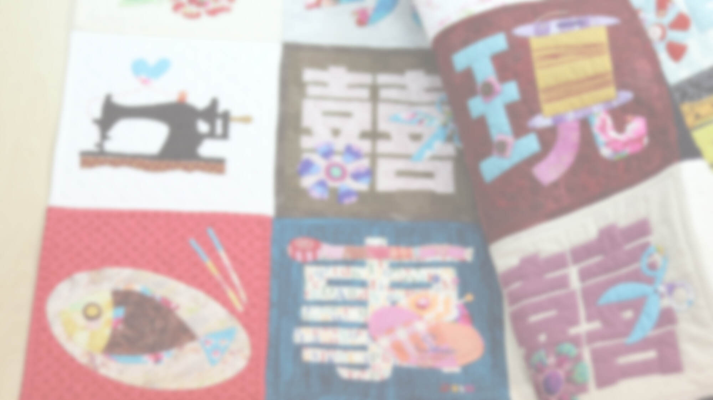
2019 友好拼布手作節
Taiwan Friendly Quilt & Craft Festival【眾籌】出版紀念集
About the Project
為什麼要出版這本作品集？
在門票將近售鑿的此時，辦展經費自理的原則下，展覽軟硬體的花費超乎我們當初預期，這讓一同努力的夥伴陷入苦思，在諮詢幾位業界同好的意見後，開始有了將展覽內容集結出版紀念冊的大膽想法，希望以出版這本紀念冊的售出盈餘，「為策展所需的經費提供些許補充」，這是出版紀念冊最重要的目的。
目前展覽進入籌備後期，而展品的影像也開始在進行拍攝的計畫安排中，我們預計出版 A4 開本，不含封面封底 120～160 頁的展覽專書，紀錄參與展覽的全台超過 40 件專業作品、40 件來自台灣大陸兩地參賽，經過二輪淘汰而產生的比賽作品、會員 50 × 50 參展作品，以及布展過程的些許紀錄，期盼這樣的編輯，能成為近三十年的台灣拼布文化史的片刻紀錄。
Crowdfunding
關於「群眾集資」
首先要說明的是「群眾集資」或是稱作「眾籌」都是在網路上團購＋預購集資的一種方式，能避免書籍因預先印刷銷售所產生的壓力。
本計劃在《嘖嘖》所設定的籌資最低門檻是 $200,000，達成這個金額出版作業才會啟動；達不到這金額就沒有這本書，款項也會從《嘖嘖》退回贊助人的帳戶。
但達到 $200,000 才只是有「出版書」的費用，我們希望能有多餘的盈餘為策展所需的經費提供些許補充，所以需要衝出高於 $200,000 的成績。
Book Preview
《築夢踏實・展覽作品集》精彩預覽
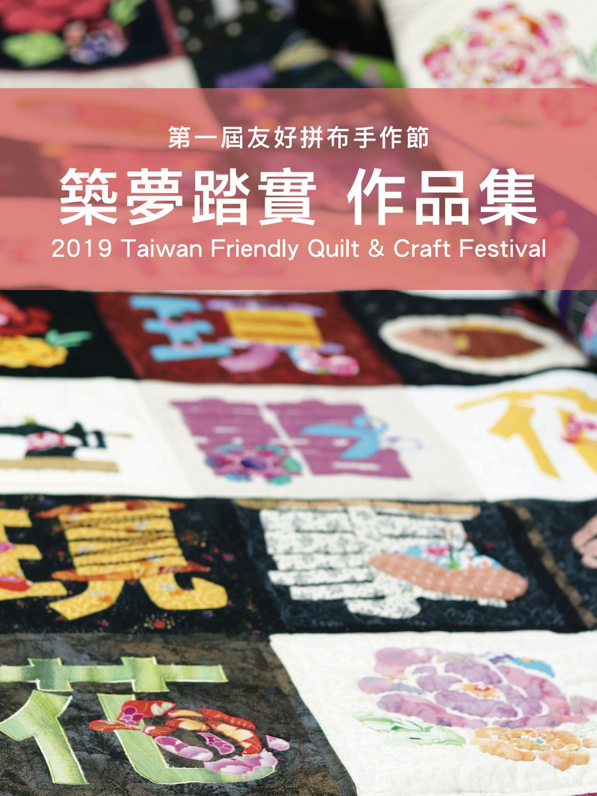

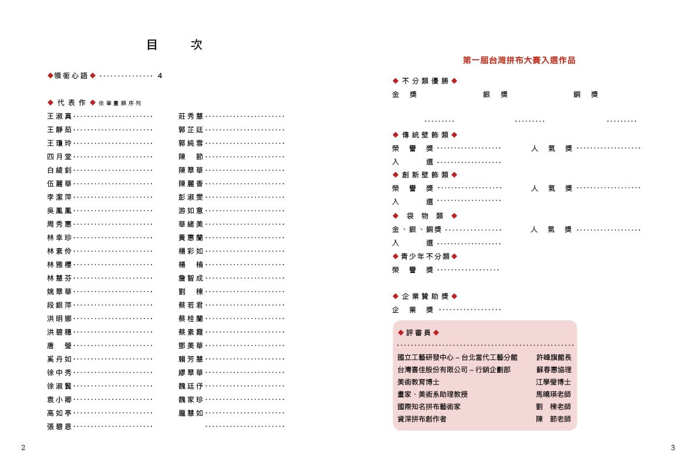
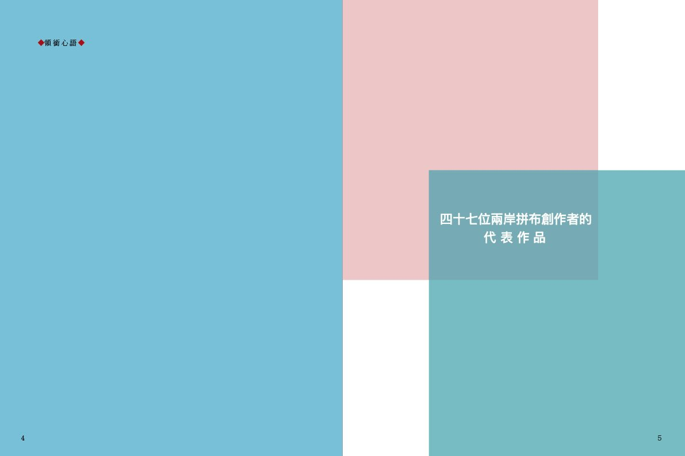
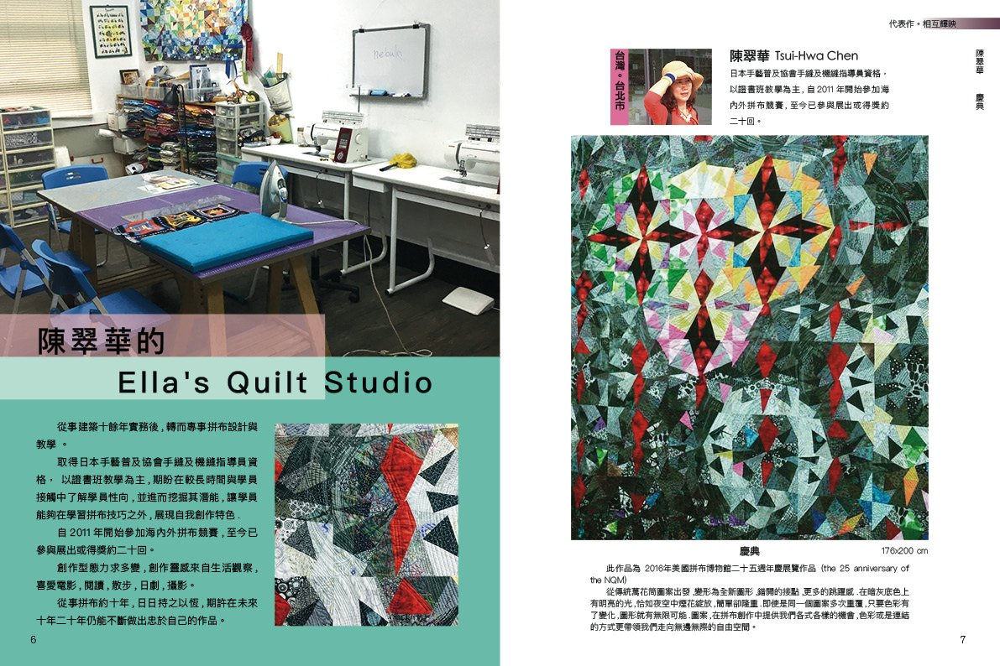
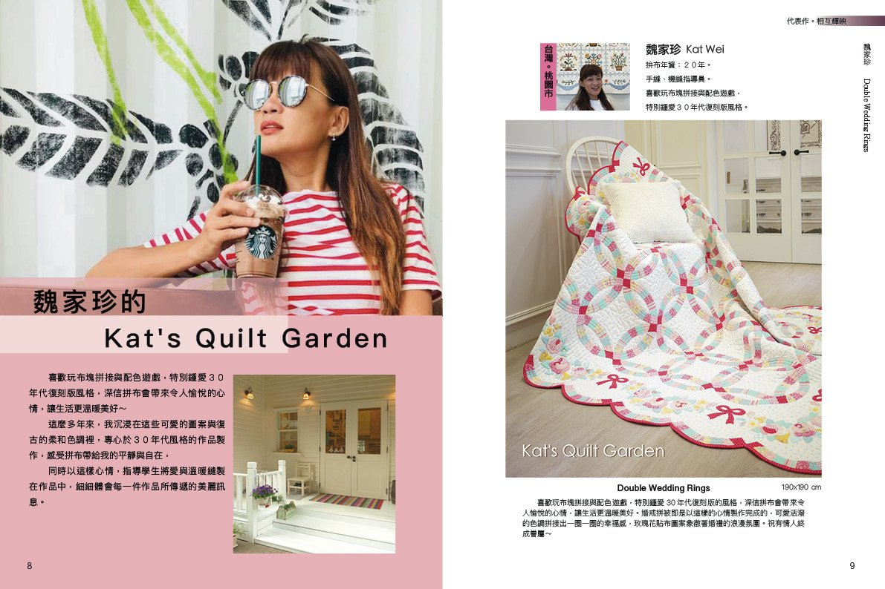
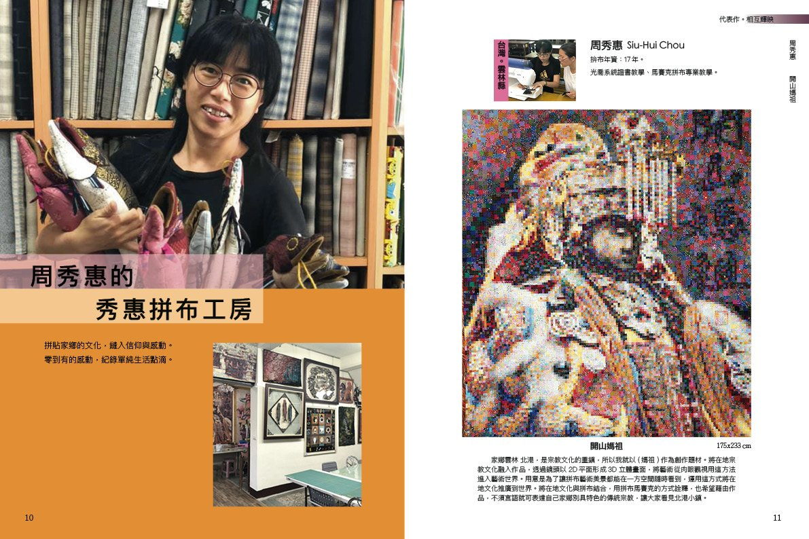
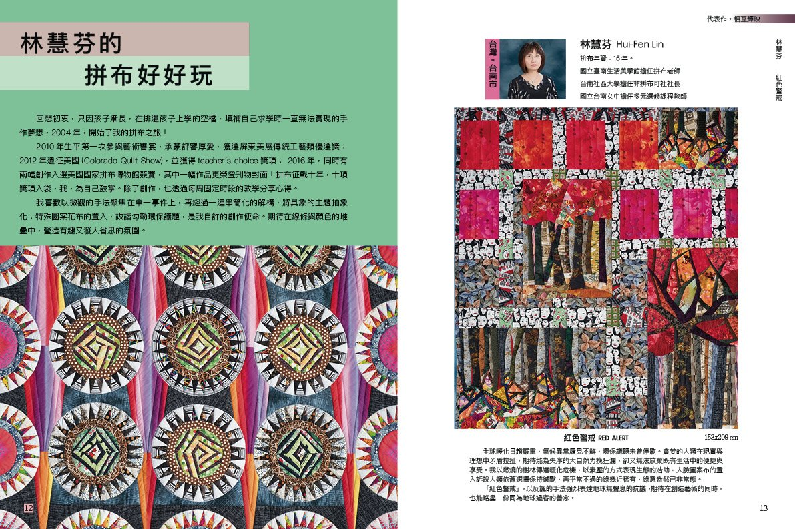
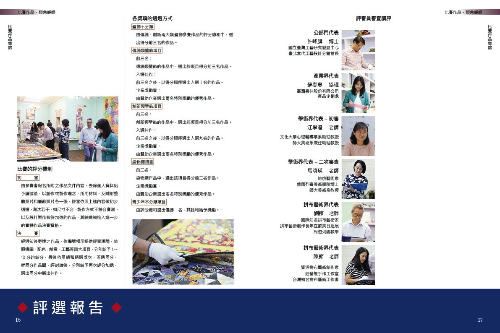
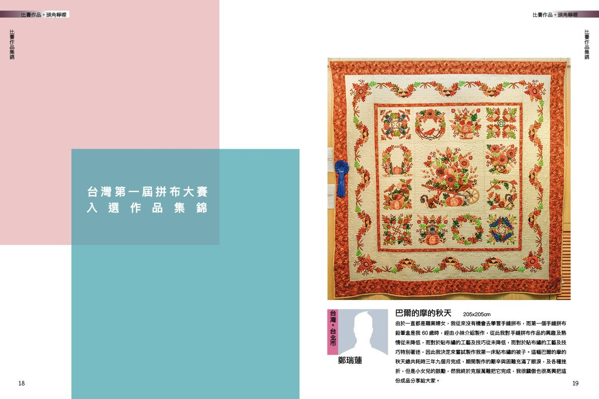
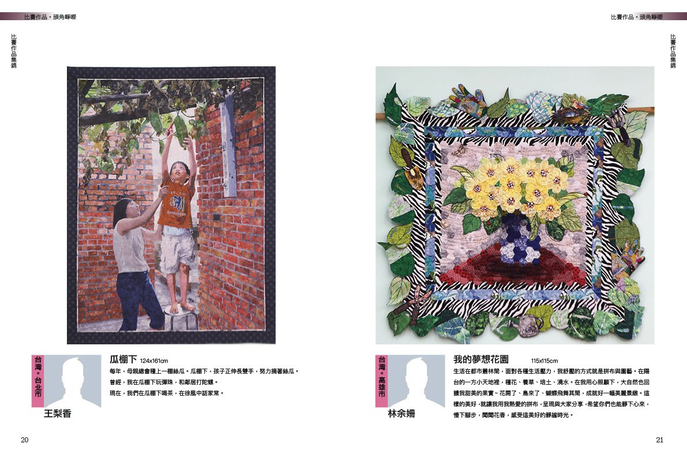
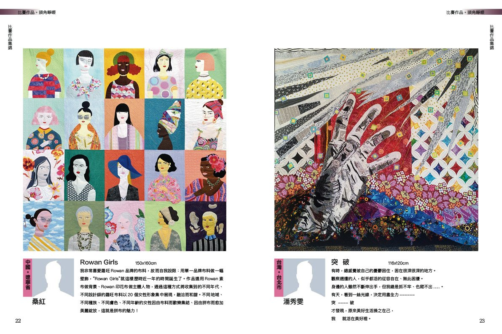
100% Goal Gift
期待 100% 募資達標，2020 年有囍事花中現
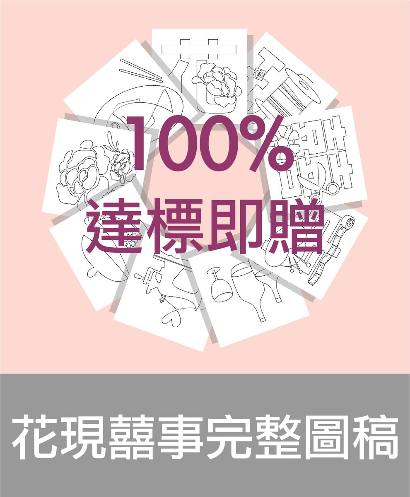
相約手作，已是拼布人熟稔的團體活動，在國外的拼布展裡，主體性的作品也是展覽能量的具體展現，【花現囍事】就是 2019 友好拼布手作節的主題作品，集結將近五百位來自台灣各地的拼布愛好者，共同完成兩幅為一件的巨幅拼布作品，同時將於展覽活動完成後義賣所得捐出。
為感謝您的鼎力相助，於募資 100% 達標後，即送上本屆主題作品的完整圖稿，您也可以運用於自己的創作中，使活動的能量繼續傳遞。
Delivery
出版領書方式
- 出版日預計為 2020 年一月中旬，若有延遲會提前個別通知外，也會公布於友好會粉專。
- 本書郵寄費用（限台灣境內，海外運費另計）均已含於贊助金額內。
- 寄送均以郵局郵寄方式，恕無法以便利店到店等其他方式寄送。
- 出版後即為您陸續寄出，感謝您的耐心等待。
Pre-order Contacts
您也可以找下列老師幫忙代訂書籍
木棉坊拼布美學教室－洪藝芳老師
02-24293917、0915-800-129 基隆市仁愛區愛一路35號10樓-3
伍麗華拼布工作室
0933-917555 台北市洛陽街55號11樓-1
拼布花園 Patchwork Garden－龎慧如老師
(02)2311-2578 北市延平南路61號10樓C室
臺灣拼布網－郭芷廷老師
02-26548287／LINE@quiltwork／0936-904522 台北市南港區忠孝東路六段230號
中華職訓中心－賴芳慧老師
0920-486701 台北市信義區基隆路一段35巷7弄1-4號（第一訓練區4樓401教室）
周秀惠老師（台北）
貝佳時尚布工房－詹智成老師
02-2559-5881 台北市延平北路一段140號
三色堇拼布坊－徐中秀老師
(03)552-0646 新竹縣竹北市文昌街74號
雅櫻手作舖 林雅櫻老師
(04)2255-9090 台中市大墩十街354號
游如意創意拼布工作室
(04)2314-009／0955-428566 台中市西區華美西街一段142號
布穀鳥拼布教室－張玉玲老師
(04)771-6900／0911-136181 彰化縣鹿港鎮鹿和路3段200-4號
川久屋拼布藝術工作室－藍玉娟老師
(04)728-5319 彰化市實踐路66號
秀惠拼布工房
05-7732099 雲林縣北港鎮樹腳里武德街23號
教室陸續增加中……
Event Information
活動資訊